hs1939 <- read.csv("hs1939_cleaned.csv")
hs1939 <- hs1939[-5,] #dropping case 5 that has some missingModule 3 Descriptive Statistics and Univariate Tests
In this module we will cover:
- Descriptive Statistics
- Univariate Tests
- t-tests
- One-way ANOVA
- Factorial ANOVA
- Correlation
- Regression (OLS and logistic)
First we will install the packages (if needed) and change some options
#Import data —-
we will change sex to a factor
hs1939$sex <- factor(hs1939$sex)
janitor::tabyl(hs1939$sex) hs1939$sex n percent
Female 154 0.5133333
Male 146 0.4866667We will now make the variable grade into an ordinal variable
hs1939$grade <- ordered(hs1939$grade, labels = c("7th grade", "8th grade"))Make school a factor
hs1939$school <- factor(hs1939$school)look at the structure of the dataset
str(hs1939)'data.frame': 300 obs. of 17 variables:
$ id : int 1 2 3 4 6 7 8 9 11 12 ...
$ sex : Factor w/ 2 levels "Female","Male": 2 1 1 2 1 2 1 1 1 2 ...
$ age_years : int 13 13 13 13 14 12 12 13 12 12 ...
$ age_months : int 1 7 1 2 1 1 2 0 5 2 ...
$ school : Factor w/ 2 levels "Grant-White",..: 2 2 2 2 2 2 2 2 2 2 ...
$ grade : Ord.factor w/ 2 levels "7th grade"<"8th grade": 1 1 1 1 1 1 1 1 1 1 ...
$ visual_perception : num 3.33 5.33 4.5 5.33 5.33 ...
$ cubes : num 7.75 5.25 5.25 7.75 5 6 6.25 5.75 5.25 5.75 ...
$ lozenges : num 0.375 2.125 1.875 3 2.25 ...
$ paragraph_completion : num 2.33 1.67 1 2.67 1 ...
$ sentence_completion : num 5.75 3 1.75 4.5 3 6 4.25 5.75 5 3.5 ...
$ word_meaning : num 1.286 1.286 0.429 2.429 0.857 ...
$ speeded_addition : num 3.39 3.78 3.26 3 4.35 ...
$ speeded_counting : num 5.75 6.25 3.9 5.3 6.65 6.2 5.15 4.65 4.55 5.7 ...
$ speeded_discrimination : num 6.36 7.92 4.42 4.86 7.5 ...
$ visual_perception_mnctr: num -1.596 0.404 -0.429 0.404 0.404 ...
$ vis_cat : chr "Low" "Medium" "Medium" "Medium" ...look at a table for grade
table(hs1939$grade)
7th grade 8th grade
156 143 Standard dataset checks
structure
str(hs1939)'data.frame': 300 obs. of 17 variables:
$ id : int 1 2 3 4 6 7 8 9 11 12 ...
$ sex : Factor w/ 2 levels "Female","Male": 2 1 1 2 1 2 1 1 1 2 ...
$ age_years : int 13 13 13 13 14 12 12 13 12 12 ...
$ age_months : int 1 7 1 2 1 1 2 0 5 2 ...
$ school : Factor w/ 2 levels "Grant-White",..: 2 2 2 2 2 2 2 2 2 2 ...
$ grade : Ord.factor w/ 2 levels "7th grade"<"8th grade": 1 1 1 1 1 1 1 1 1 1 ...
$ visual_perception : num 3.33 5.33 4.5 5.33 5.33 ...
$ cubes : num 7.75 5.25 5.25 7.75 5 6 6.25 5.75 5.25 5.75 ...
$ lozenges : num 0.375 2.125 1.875 3 2.25 ...
$ paragraph_completion : num 2.33 1.67 1 2.67 1 ...
$ sentence_completion : num 5.75 3 1.75 4.5 3 6 4.25 5.75 5 3.5 ...
$ word_meaning : num 1.286 1.286 0.429 2.429 0.857 ...
$ speeded_addition : num 3.39 3.78 3.26 3 4.35 ...
$ speeded_counting : num 5.75 6.25 3.9 5.3 6.65 6.2 5.15 4.65 4.55 5.7 ...
$ speeded_discrimination : num 6.36 7.92 4.42 4.86 7.5 ...
$ visual_perception_mnctr: num -1.596 0.404 -0.429 0.404 0.404 ...
$ vis_cat : chr "Low" "Medium" "Medium" "Medium" ...Topic 1 Descriptive Statistics
Descriptives
psych::describe(hs1939) vars n mean sd median trimmed mad min
id 1 300 177.13 105.65 163.50 177.38 140.85 1.00
sex* 2 300 1.49 0.50 1.00 1.48 0.00 1.00
age_years 3 300 13.00 1.05 13.00 12.89 1.48 11.00
age_months 4 300 5.39 3.45 5.00 5.33 4.45 0.00
school* 5 300 1.52 0.50 2.00 1.52 0.00 1.00
grade* 6 299 1.48 0.50 1.00 1.47 0.00 1.00
visual_perception 7 300 4.93 1.16 5.00 4.96 1.24 0.67
cubes 8 300 6.09 1.18 6.00 6.02 1.11 2.25
lozenges 9 300 2.26 1.13 2.12 2.20 1.30 0.25
paragraph_completion 10 300 3.06 1.17 3.00 3.03 0.99 0.00
sentence_completion 11 300 4.34 1.29 4.50 4.40 1.48 1.00
word_meaning 12 300 2.18 1.10 2.00 2.09 1.06 0.14
speeded_addition 13 300 4.19 1.09 4.09 4.17 1.10 1.30
speeded_counting 14 300 5.52 1.01 5.50 5.49 0.96 3.05
speeded_discrimination 15 300 5.37 1.01 5.40 5.36 1.01 2.78
visual_perception_mnctr 16 300 0.00 1.16 0.07 0.03 1.24 -4.26
vis_cat* 17 300 2.14 0.84 2.00 2.17 1.48 1.00
max range skew kurtosis se
id 351.00 350.00 -0.01 -1.36 6.10
sex* 2.00 1.00 0.05 -2.00 0.03
age_years 16.00 5.00 0.69 0.20 0.06
age_months 11.00 11.00 0.08 -1.22 0.20
school* 2.00 1.00 -0.07 -2.00 0.03
grade* 2.00 1.00 0.09 -2.00 0.03
visual_perception 8.50 7.83 -0.26 0.33 0.07
cubes 9.25 7.00 0.47 0.34 0.07
lozenges 4.50 4.25 0.38 -0.91 0.07
paragraph_completion 6.33 6.33 0.26 0.07 0.07
sentence_completion 7.00 6.00 -0.35 -0.56 0.07
word_meaning 6.14 6.00 0.86 0.81 0.06
speeded_addition 7.43 6.13 0.24 -0.31 0.06
speeded_counting 10.00 6.95 0.53 1.18 0.06
speeded_discrimination 9.25 6.47 0.21 0.29 0.06
visual_perception_mnctr 3.57 7.83 -0.26 0.33 0.07
vis_cat* 3.00 2.00 -0.27 -1.54 0.05Frequencies
janitor::tabyl(hs1939$sex) hs1939$sex n percent
Female 154 0.5133333
Male 146 0.4866667Another option that is really neat
library(summarytools)
Attaching package: 'summarytools'The following object is masked from 'package:tibble':
viewview(dfSummary(hs1939))Switching method to 'browser'Output file written: C:\Users\eschuler\AppData\Local\Temp\RtmpSuRc1x\file2810279a447b.htmlAnd finally APA tables for means, sd, and correlation note only for continuous variables
apaTables::apa.cor.table(hs1939)
Means, standard deviations, and correlations with confidence intervals
Variable M SD 1 2
1. id 177.13 105.65
2. age_years 13.00 1.05 .00
[-.11, .11]
3. age_months 5.39 3.45 -.02 -.25**
[-.13, .10] [-.35, -.14]
4. visual_perception 4.93 1.16 .05 -.05
[-.07, .16] [-.17, .06]
5. cubes 6.09 1.18 .12* -.02
[.00, .23] [-.13, .09]
6. lozenges 2.25 1.13 -.15* .03
[-.26, -.04] [-.08, .15]
7. paragraph_completion 3.06 1.17 .27** -.20**
[.16, .37] [-.31, -.09]
8. sentence_completion 4.34 1.29 .31** -.22**
[.20, .41] [-.33, -.11]
9. word_meaning 2.18 1.10 .29** -.17**
[.18, .39] [-.28, -.06]
10. speeded_addition 4.19 1.09 -.10 .11
[-.21, .02] [-.00, .22]
11. speeded_counting 5.52 1.01 .09 .24**
[-.03, .20] [.13, .34]
12. speeded_discrimination 5.37 1.01 .03 .10
[-.08, .15] [-.01, .21]
13. visual_perception_mnctr 0.00 1.16 .05 -.05
[-.07, .16] [-.17, .06]
3 4 5 6 7 8
.06
[-.06, .17]
.04 .30**
[-.07, .15] [.19, .40]
.03 .44** .34**
[-.08, .14] [.35, .53] [.23, .43]
-.02 .38** .15** .16**
[-.13, .10] [.28, .47] [.04, .26] [.05, .27]
-.04 .29** .14* .08 .73**
[-.15, .08] [.19, .39] [.03, .25] [-.04, .19] [.68, .78]
.01 .36** .19** .20** .71** .72**
[-.11, .12] [.26, .46] [.08, .30] [.09, .31] [.64, .76] [.66, .77]
.06 .07 -.08 .07 .17** .10
[-.06, .17] [-.04, .18] [-.19, .04] [-.04, .18] [.06, .28] [-.01, .21]
.01 .23** .10 .19** .11 .14*
[-.10, .12] [.12, .33] [-.02, .21] [.08, .30] [-.01, .22] [.03, .25]
.03 .40** .21** .33** .21** .23**
[-.08, .14] [.30, .49] [.10, .31] [.23, .43] [.10, .31] [.12, .33]
.06 1.00** .30** .44** .38** .29**
[-.06, .17] [1.00, 1.00] [.19, .40] [.35, .53] [.28, .47] [.19, .39]
9 10 11 12
.12*
[.01, .23]
.15** .49**
[.04, .26] [.40, .57]
.21** .34** .45**
[.10, .32] [.24, .44] [.35, .53]
.36** .07 .23** .40**
[.26, .46] [-.04, .18] [.12, .33] [.30, .49]
Note. M and SD are used to represent mean and standard deviation, respectively.
Values in square brackets indicate the 95% confidence interval.
The confidence interval is a plausible range of population correlations
that could have caused the sample correlation (Cumming, 2014).
* indicates p < .05. ** indicates p < .01.
#Independent samples t-test
First we start with the Levene’s test of equality of variance using the mean
lev1 <- car::leveneTest(cubes ~ school, data = hs1939, center = "mean")
lev1Levene's Test for Homogeneity of Variance (center = "mean")
Df F value Pr(>F)
group 1 1.2389 0.2666
298 using the median, slightly more robust
lev2 <- car::leveneTest(cubes ~ school, data = hs1939, center = "median")
lev2Levene's Test for Homogeneity of Variance (center = "median")
Df F value Pr(>F)
group 1 0.7078 0.4008
298 Descriptive statistics by group
psych::describeBy(hs1939$cubes, group = hs1939$school, mat = TRUE) item group1 vars n mean sd median trimmed mad min
X11 1 Grant-White 1 145 6.200000 1.111259 6.25 6.141026 1.11195 2.25
X12 2 Pasteur 1 155 5.991935 1.230174 5.75 5.904000 1.11195 3.50
max range skew kurtosis se
X11 9.25 7.00 0.2341043 0.7488948 0.09228501
X12 9.25 5.75 0.6729540 0.1642798 0.09880993Run an indepedent samples t-test *If equal variances are not met, use FALSE
m1<-t.test(cubes ~ school, data=hs1939, var.equal=TRUE, na.rm=TRUE)
print(m1)
Two Sample t-test
data: cubes by school
t = 1.5337, df = 298, p-value = 0.1262
alternative hypothesis: true difference in means between group Grant-White and group Pasteur is not equal to 0
95 percent confidence interval:
-0.05891275 0.47504178
sample estimates:
mean in group Grant-White mean in group Pasteur
6.200000 5.991935 Get Cohen’s D
rstatix::cohens_d(cubes ~ school, var.equal = TRUE, data = hs1939)# A tibble: 1 × 7
.y. group1 group2 effsize n1 n2 magnitude
* <chr> <chr> <chr> <dbl> <int> <int> <ord>
1 cubes Grant-White Pasteur 0.177 145 155 negligibleCreate a visual
ggpubr::ggboxplot(hs1939, x = "school", y = "cubes",
color = "school", palette = c("red", "blue"),
ylab = "Cubes Score", xlab = "School")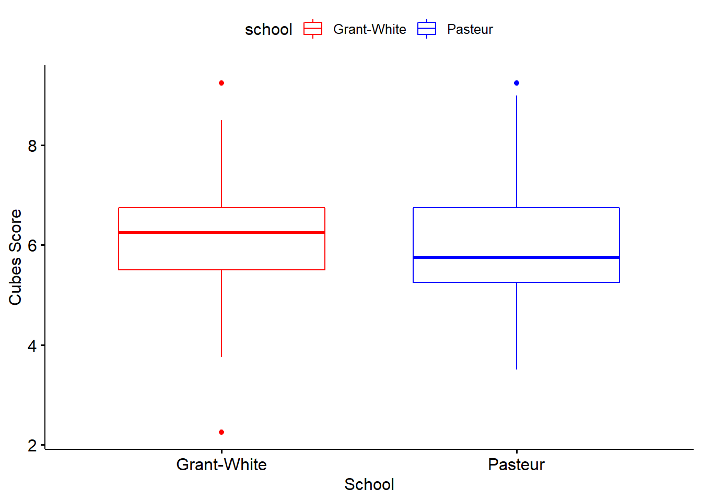
#One-Way ANOVA
We will now run a One-Way ANOVA of cubes. We first need to create a new grouping variable that has three levels
hs1939$group <- rep(1:3,100)
hs1939$group <- factor(hs1939$group)
janitor::tabyl(hs1939$group) hs1939$group n percent
1 100 0.3333333
2 100 0.3333333
3 100 0.3333333Descriptive statistics by group
psych::describeBy(hs1939$cubes, group = hs1939$group, mat = TRUE) item group1 vars n mean sd median trimmed mad min max
X11 1 1 1 100 5.9825 1.152651 6.00 5.968750 1.11195 2.25 9.00
X12 2 2 1 100 6.0825 1.205551 5.75 5.971875 1.11195 3.75 9.25
X13 3 3 1 100 6.2125 1.172267 6.00 6.128125 1.11195 3.50 9.25
range skew kurtosis se
X11 6.75 0.01254775 0.5995925 0.1152651
X12 5.50 0.75234423 0.3830402 0.1205551
X13 5.75 0.57602873 -0.2951521 0.1172267check with a visual
ggpubr::ggboxplot(hs1939, x = "group", y = "cubes",
color = "group", palette = c("red", "blue", "green"),
ylab = "Cubes Score", xlab = "Group")
We can now run an ANOVA
aov_ow <- aov(cubes ~ group, data = hs1939)
summary(aov_ow) Df Sum Sq Mean Sq F value Pr(>F)
group 2 2.7 1.330 0.96 0.384
Residuals 297 411.5 1.385 We can also run a posthoc
pairwise.t.test(hs1939$cubes, hs1939$group, p.adjust.method = "bonferroni")
Pairwise comparisons using t tests with pooled SD
data: hs1939$cubes and hs1939$group
1 2
2 1.0 -
3 0.5 1.0
P value adjustment method: bonferroni Factorial ANOVA
Run a factorial ANOVA of School by Sex on Cube Scores
check frequency tables
table(hs1939$sex, hs1939$school)
Grant-White Pasteur
Female 73 81
Male 72 74create a visual
ggpubr::ggboxplot(hs1939, x = "school", y = "cubes", color = "sex",
palette = c("green", "blue"))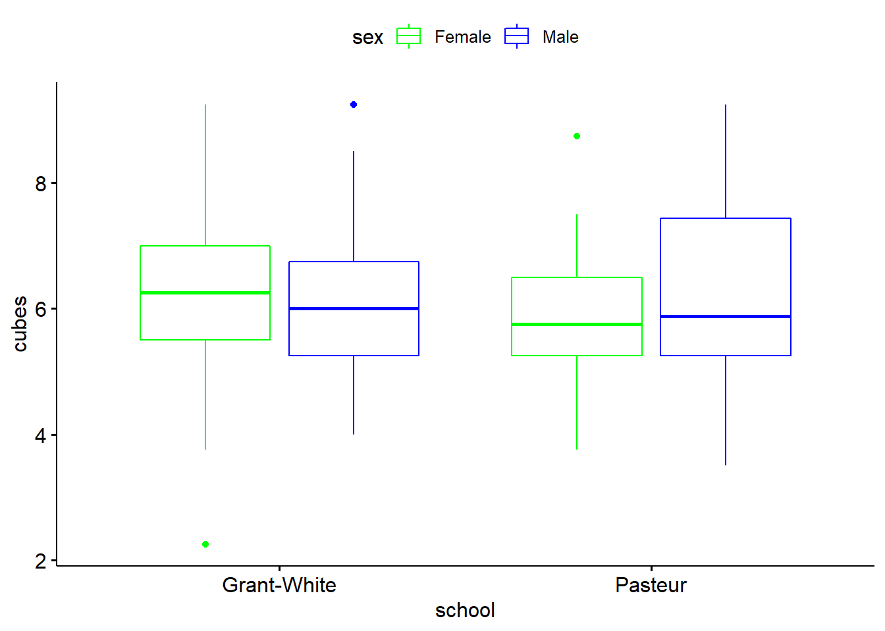
run an ANOVA with an interaction
aov_fact <- aov(cubes~ school * sex, data = hs1939)
summary(aov_fact) Df Sum Sq Mean Sq F value Pr(>F)
school 1 3.2 3.243 2.386 0.123
sex 1 5.3 5.311 3.907 0.049 *
school:sex 1 3.3 3.252 2.393 0.123
Residuals 296 402.3 1.359
---
Signif. codes: 0 '***' 0.001 '**' 0.01 '*' 0.05 '.' 0.1 ' ' 1Correlation
Here is a good way (other than the APA table used earlier to look at correlation tests one by one)
#drop ID
hs1939b <- hs1939[,-1]
correlation::correlation(hs1939b)# Correlation Matrix (pearson-method)
Parameter1 | Parameter2 | r | 95% CI | t(298) | p
-------------------------------------------------------------------------------------------------
age_years | age_months | -0.25 | [-0.35, -0.14] | -4.42 | < .001***
age_years | visual_perception | -0.05 | [-0.17, 0.06] | -0.95 | > .999
age_years | cubes | -0.02 | [-0.13, 0.09] | -0.33 | > .999
age_years | lozenges | 0.03 | [-0.08, 0.15] | 0.58 | > .999
age_years | paragraph_completion | -0.20 | [-0.31, -0.09] | -3.51 | 0.018*
age_years | sentence_completion | -0.22 | [-0.33, -0.11] | -3.96 | 0.004**
age_years | word_meaning | -0.17 | [-0.28, -0.06] | -3.03 | 0.083
age_years | speeded_addition | 0.11 | [ 0.00, 0.22] | 1.90 | > .999
age_years | speeded_counting | 0.24 | [ 0.13, 0.34] | 4.29 | 0.001**
age_years | speeded_discrimination | 0.10 | [-0.01, 0.21] | 1.75 | > .999
age_years | visual_perception_mnctr | -0.05 | [-0.17, 0.06] | -0.95 | > .999
age_months | visual_perception | 0.06 | [-0.06, 0.17] | 0.96 | > .999
age_months | cubes | 0.04 | [-0.07, 0.15] | 0.72 | > .999
age_months | lozenges | 0.03 | [-0.08, 0.14] | 0.52 | > .999
age_months | paragraph_completion | -0.02 | [-0.13, 0.10] | -0.31 | > .999
age_months | sentence_completion | -0.04 | [-0.15, 0.08] | -0.66 | > .999
age_months | word_meaning | 8.24e-03 | [-0.11, 0.12] | 0.14 | > .999
age_months | speeded_addition | 0.06 | [-0.06, 0.17] | 0.97 | > .999
age_months | speeded_counting | 0.01 | [-0.10, 0.12] | 0.19 | > .999
age_months | speeded_discrimination | 0.03 | [-0.08, 0.14] | 0.52 | > .999
age_months | visual_perception_mnctr | 0.06 | [-0.06, 0.17] | 0.96 | > .999
visual_perception | cubes | 0.30 | [ 0.19, 0.40] | 5.42 | < .001***
visual_perception | lozenges | 0.44 | [ 0.35, 0.53] | 8.56 | < .001***
visual_perception | paragraph_completion | 0.38 | [ 0.28, 0.47] | 7.06 | < .001***
visual_perception | sentence_completion | 0.29 | [ 0.19, 0.39] | 5.31 | < .001***
visual_perception | word_meaning | 0.36 | [ 0.26, 0.46] | 6.72 | < .001***
visual_perception | speeded_addition | 0.07 | [-0.04, 0.18] | 1.21 | > .999
visual_perception | speeded_counting | 0.23 | [ 0.12, 0.33] | 4.04 | 0.003**
visual_perception | speeded_discrimination | 0.40 | [ 0.30, 0.49] | 7.45 | < .001***
visual_perception | visual_perception_mnctr | 1.00 | [ 1.00, 1.00] | Inf | < .001***
cubes | lozenges | 0.34 | [ 0.23, 0.43] | 6.17 | < .001***
cubes | paragraph_completion | 0.15 | [ 0.04, 0.26] | 2.65 | 0.243
cubes | sentence_completion | 0.14 | [ 0.03, 0.25] | 2.42 | 0.422
cubes | word_meaning | 0.19 | [ 0.08, 0.30] | 3.42 | 0.024*
cubes | speeded_addition | -0.08 | [-0.19, 0.04] | -1.34 | > .999
cubes | speeded_counting | 0.10 | [-0.02, 0.21] | 1.66 | > .999
cubes | speeded_discrimination | 0.21 | [ 0.10, 0.31] | 3.68 | 0.010*
cubes | visual_perception_mnctr | 0.30 | [ 0.19, 0.40] | 5.42 | < .001***
lozenges | paragraph_completion | 0.16 | [ 0.05, 0.27] | 2.76 | 0.186
lozenges | sentence_completion | 0.08 | [-0.04, 0.19] | 1.32 | > .999
lozenges | word_meaning | 0.20 | [ 0.09, 0.31] | 3.52 | 0.018*
lozenges | speeded_addition | 0.07 | [-0.04, 0.18] | 1.22 | > .999
lozenges | speeded_counting | 0.19 | [ 0.08, 0.30] | 3.34 | 0.032*
lozenges | speeded_discrimination | 0.33 | [ 0.23, 0.43] | 6.07 | < .001***
lozenges | visual_perception_mnctr | 0.44 | [ 0.35, 0.53] | 8.56 | < .001***
paragraph_completion | sentence_completion | 0.73 | [ 0.68, 0.78] | 18.61 | < .001***
paragraph_completion | word_meaning | 0.71 | [ 0.64, 0.76] | 17.17 | < .001***
paragraph_completion | speeded_addition | 0.17 | [ 0.06, 0.28] | 3.04 | 0.083
paragraph_completion | speeded_counting | 0.11 | [-0.01, 0.22] | 1.87 | > .999
paragraph_completion | speeded_discrimination | 0.21 | [ 0.10, 0.31] | 3.68 | 0.010*
paragraph_completion | visual_perception_mnctr | 0.38 | [ 0.28, 0.47] | 7.06 | < .001***
sentence_completion | word_meaning | 0.72 | [ 0.66, 0.77] | 17.94 | < .001***
sentence_completion | speeded_addition | 0.10 | [-0.01, 0.21] | 1.76 | > .999
sentence_completion | speeded_counting | 0.14 | [ 0.03, 0.25] | 2.43 | 0.421
sentence_completion | speeded_discrimination | 0.23 | [ 0.12, 0.33] | 4.04 | 0.003**
sentence_completion | visual_perception_mnctr | 0.29 | [ 0.19, 0.39] | 5.31 | < .001***
word_meaning | speeded_addition | 0.12 | [ 0.01, 0.23] | 2.12 | 0.878
word_meaning | speeded_counting | 0.15 | [ 0.04, 0.26] | 2.60 | 0.275
word_meaning | speeded_discrimination | 0.21 | [ 0.10, 0.32] | 3.78 | 0.008**
word_meaning | visual_perception_mnctr | 0.36 | [ 0.26, 0.46] | 6.72 | < .001***
speeded_addition | speeded_counting | 0.49 | [ 0.40, 0.57] | 9.67 | < .001***
speeded_addition | speeded_discrimination | 0.34 | [ 0.24, 0.44] | 6.28 | < .001***
speeded_addition | visual_perception_mnctr | 0.07 | [-0.04, 0.18] | 1.21 | > .999
speeded_counting | speeded_discrimination | 0.45 | [ 0.35, 0.53] | 8.66 | < .001***
speeded_counting | visual_perception_mnctr | 0.23 | [ 0.12, 0.33] | 4.04 | 0.003**
speeded_discrimination | visual_perception_mnctr | 0.40 | [ 0.30, 0.49] | 7.45 | < .001***
p-value adjustment method: Holm (1979)
Observations: 300Ordinary Least Squares (OLS) Regression —-
activate specific libraries
library(car)Loading required package: carData
Attaching package: 'car'The following object is masked from 'package:dplyr':
recodeThe following object is masked from 'package:purrr':
somelibrary(lmtest)Loading required package: zoo
Attaching package: 'zoo'The following objects are masked from 'package:base':
as.Date, as.Date.numericlibrary(yhat)
library(psych)
Attaching package: 'psych'The following object is masked from 'package:car':
logitThe following objects are masked from 'package:ggplot2':
%+%, alphacheck distributions through descriptives
describe(hs1939$lozenges) vars n mean sd median trimmed mad min max range skew kurtosis se
X1 1 300 2.26 1.13 2.12 2.2 1.3 0.25 4.5 4.25 0.38 -0.91 0.07describe(hs1939$visual_perception) vars n mean sd median trimmed mad min max range skew kurtosis se
X1 1 300 4.93 1.16 5 4.96 1.24 0.67 8.5 7.83 -0.26 0.33 0.07check distributions through histograms
hist(hs1939$lozenges)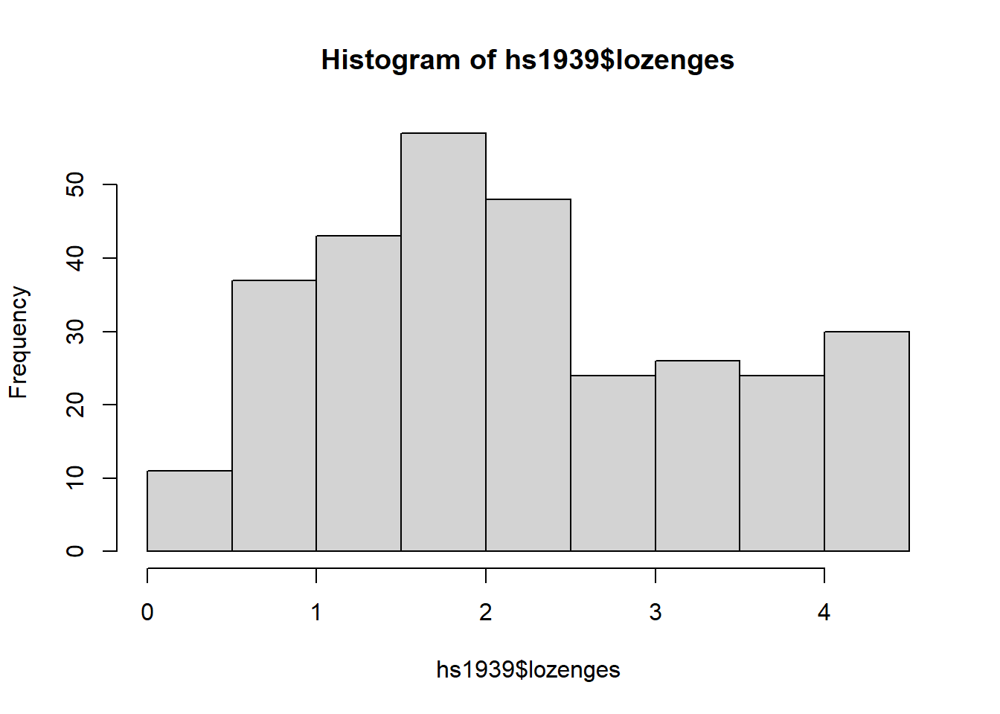
hist(hs1939$visual_perception)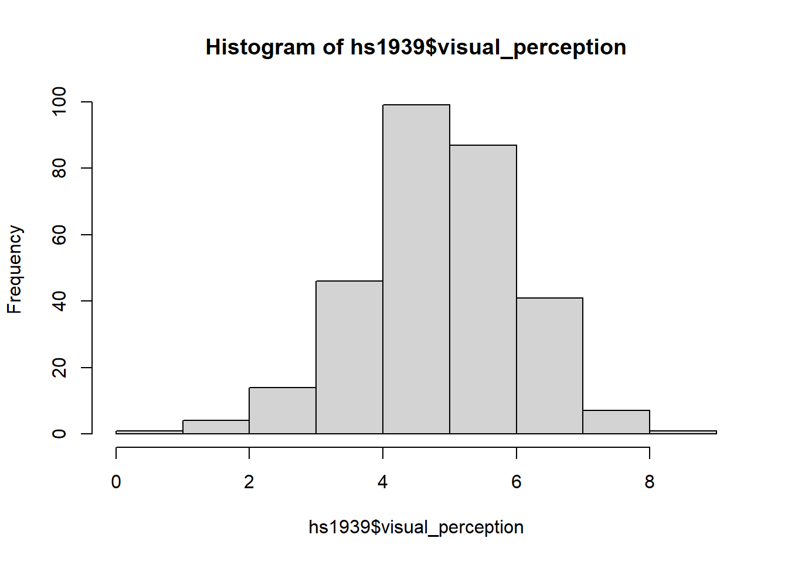
check distributions through boxplots
boxplot(hs1939$lozenges)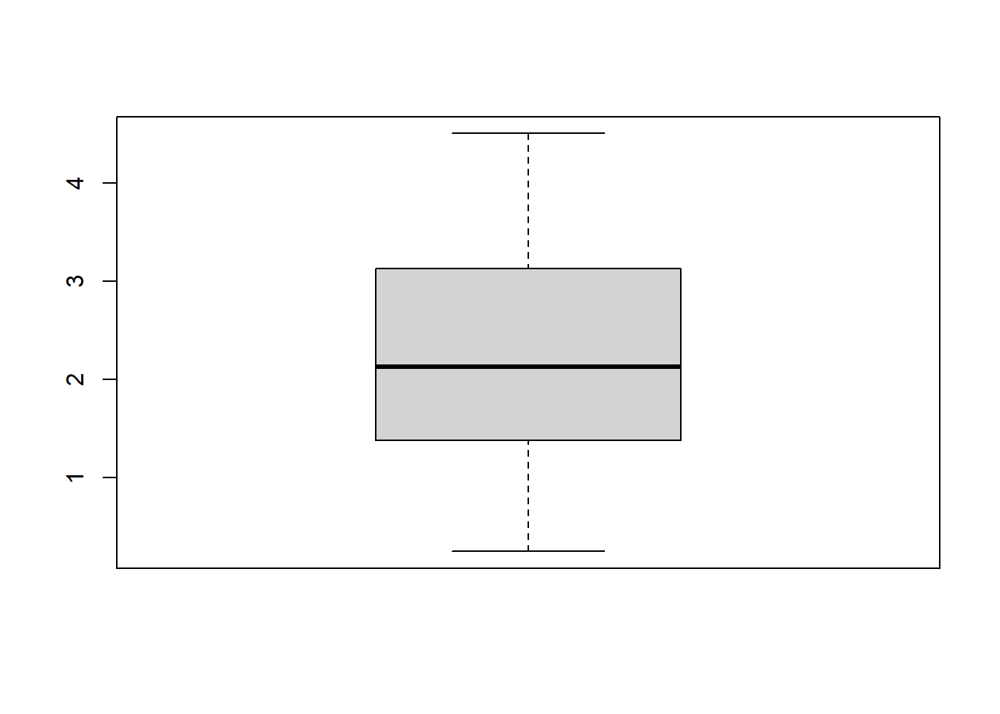
boxplot(hs1939$visual_perception)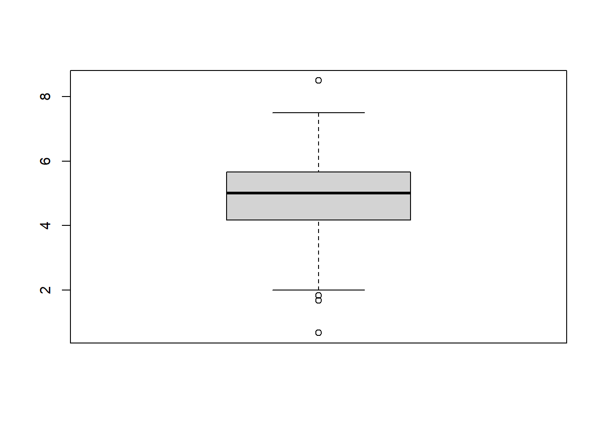
run model
ols_results <- lm(visual_perception ~ cubes + lozenges + sex + school + sex*school, data = hs1939)
summary(ols_results)
Call:
lm(formula = visual_perception ~ cubes + lozenges + sex + school +
sex * school, data = hs1939)
Residuals:
Min 1Q Median 3Q Max
-3.4489 -0.7332 0.1242 0.6563 2.5863
Coefficients:
Estimate Std. Error t value Pr(>|t|)
(Intercept) 3.146754 0.339422 9.271 < 0.0000000000000002 ***
cubes 0.154051 0.054852 2.808 0.00531 **
lozenges 0.424857 0.058895 7.214 0.00000000000464 ***
sexMale -0.040015 0.171854 -0.233 0.81605
schoolPasteur -0.181467 0.170340 -1.065 0.28760
sexMale:schoolPasteur -0.003748 0.239219 -0.016 0.98751
---
Signif. codes: 0 '***' 0.001 '**' 0.01 '*' 0.05 '.' 0.1 ' ' 1
Residual standard error: 1.03 on 294 degrees of freedom
Multiple R-squared: 0.2288, Adjusted R-squared: 0.2157
F-statistic: 17.44 on 5 and 294 DF, p-value: 0.000000000000003987print overall model results
glance(ols_results)# A tibble: 1 × 12
r.squared adj.r.squared sigma statistic p.value df logLik AIC BIC
<dbl> <dbl> <dbl> <dbl> <dbl> <dbl> <dbl> <dbl> <dbl>
1 0.229 0.216 1.03 17.4 3.99e-15 5 -432. 877. 903.
# … with 3 more variables: deviance <dbl>, df.residual <int>, nobs <int>We can extract model information as well
ols_coefficients <- ols_results$coefficients
ols_coefficients (Intercept) cubes lozenges
3.146754044 0.154051408 0.424856506
sexMale schoolPasteur sexMale:schoolPasteur
-0.040014855 -0.181467010 -0.003747598 print coefficients to a .csv file
write.csv(ols_results, file = "ols coefficients.csv")fitted values
ols_fitted <- ols_results$fitted.values
ols_fitted 1 2 3 4 6 7 8 9
4.274744 4.676877 4.570663 5.389993 4.691471 4.270690 4.724714 4.488367
10 11 12 13 14 15 16 17
4.092699 4.657033 5.067295 5.411051 4.556069 5.347425 4.706065 4.334316
18 19 20 21 22 23 24 25
4.917299 5.473483 5.587806 5.003649 5.983495 4.680952 4.502962 4.299878
26 27 28 29 30 31 32 33
4.971621 5.642149 4.638364 5.695236 3.977161 4.435260 3.952047 4.517556
34 35 36 37 38 39 40 41
4.898630 4.180265 3.942723 5.486882 4.614446 5.227812 5.177564 4.541474
42 43 44 45 46 47 48 49
4.266615 4.198913 4.526900 4.937163 5.680662 5.930388 4.281209 4.937163
50 51 52 53 54 55 56 57
4.406072 5.400532 4.748653 5.457694 4.396768 5.598366 4.633115 5.034052
58 59 60 61 62 63 64 65
5.376613 4.816334 4.550819 5.284973 5.429700 4.589312 4.266615 5.391187
66 67 68 69 70 71 72 73
4.951737 6.045926 5.391187 4.107294 4.010424 3.977161 5.780391 4.730004
74 75 76 77 78 79 80 81
5.226617 4.676877 4.783091 4.902705 4.391498 5.565103 4.792436 4.589332
82 83 84 85 86 87 88 89
5.959576 5.148376 4.710120 4.039592 4.990250 5.265109 5.057951 5.462943
90 91 92 93 94 95 96 97
4.691471 5.038107 5.361999 4.556089 3.832454 4.140557 5.612960 3.865697
98 99 100 101 102 103 104 105
5.023493 4.127158 5.052701 5.357965 4.763227 4.912029 4.420686 6.166734
106 107 108 109 110 111 112 113
5.294298 4.285264 5.598346 4.502962 4.575933 6.205247 4.889305 5.689986
114 115 116 117 118 119 120 121
4.710120 5.723229 4.275939 4.869461 5.429720 5.472288 4.343661 4.526880
122 123 124 125 126 127 128 129
4.777842 5.849287 5.526590 5.713905 5.640913 4.468503 4.521610 5.501456
130 131 132 133 134 135 136 137
4.305148 6.012683 5.299568 4.671607 4.729984 5.269184 5.617015 5.642149
138 139 140 141 142 143 144 145
5.052701 5.916988 4.797685 4.180265 6.032527 5.954306 5.704560 4.078105
146 147 148 149 150 151 152 153
4.609176 4.420666 4.541474 4.768517 5.627555 5.844037 4.768517 4.700816
154 155 156 157 158 159 160 161
4.898630 4.483098 4.382153 4.050912 4.896857 5.199403 4.470498 4.600631
162 163 164 165 166 167 168 169
5.171717 6.329532 4.587539 4.693753 4.428218 4.426716 4.340366 4.937922
170 171 172 173 174 175 176 177
4.274166 5.459669 5.256565 5.933864 5.054676 5.056178 5.393469 4.466444
178 179 180 181 182 183 184 185
5.488857 5.080097 5.580477 5.036314 4.790643 4.181044 4.244978 4.576712
186 187 188 189 190 191 192 193
4.575497 4.992531 4.567388 4.263340 4.378878 4.620495 4.799967 4.756185
194 195 196 197 198 199 200 201
4.259572 4.341868 5.204960 4.433488 4.393473 4.378878 4.660510 5.398739
202 203 204 205 206 207 208 209
4.679159 4.495919 5.045352 4.568890 5.475765 5.058731 4.258070 5.490359
210 211 212 213 214 215 216 217
4.943192 5.190365 5.157122 4.562118 5.359011 4.129439 5.425210 4.911451
218 219 220 221 222 223 224 225
4.871436 5.662772 4.876993 4.832923 4.394975 6.111834 4.096196 4.539702
226 227 228 229 230 231 232 233
6.014658 4.920776 4.591307 4.712115 5.937632 4.351192 4.327273 4.236869
234 235 236 237 238 239 240 241
5.653448 4.418893 4.943192 4.737536 4.519838 5.915215 5.073325 6.082359
242 243 244 245 246 247 248 249
5.596573 4.915506 5.648178 4.389705 6.018712 5.584532 4.827654 5.437252
250 251 252 253 254 255 256 257
4.114845 5.552790 5.913713 5.181041 5.050908 4.963343 4.992245 5.648178
258 259 260 261 262 263 264 265
5.382643 6.208724 3.975388 5.181041 4.470498 4.501189 4.961841 4.752130
266 267 268 269 270 271 272 273
5.030757 5.234148 6.115602 6.054673 4.481325 4.862399 5.846012 4.843750
274 275 276 277 278 279 280 281
4.794697 5.719934 4.417391 4.455904 4.682927 4.972381 4.712115 4.461174
282 283 284 285 286 287 288 289
5.450344 4.920776 4.866166 4.563620 4.726709 5.049406 4.644414 4.428218
290 291 292 293 294 295 296 297
5.010893 4.210233 4.509011 4.684429 4.924543 4.756185 5.382643 4.769277
298 299 300 301
4.761454 4.790643 4.359014 5.464938 check assumptions
check model diagnostics
ols_results_diag <- augment(ols_results)
ols_results_diag# A tibble: 300 × 12
.rownames visual_percepti… cubes lozenges sex school .fitted .resid .hat
<chr> <dbl> <dbl> <dbl> <fct> <fct> <dbl> <dbl> <dbl>
1 1 3.33 7.75 0.375 Male Paste… 4.27 -0.941 0.0466
2 2 5.33 5.25 2.12 Fema… Paste… 4.68 0.656 0.0130
3 3 4.5 5.25 1.88 Fema… Paste… 4.57 -0.0707 0.0131
4 4 5.33 7.75 3 Male Paste… 5.39 -0.0567 0.0194
5 6 5.33 5 2.25 Fema… Paste… 4.69 0.642 0.0140
6 7 2.83 6 1 Male Paste… 4.27 -1.44 0.0231
7 8 5.67 6.25 1.88 Fema… Paste… 4.72 0.942 0.0138
8 9 4.5 5.75 1.5 Fema… Paste… 4.49 0.0116 0.0141
9 10 3.5 5.25 0.75 Fema… Paste… 4.09 -0.593 0.0187
10 11 3.67 5.75 2 Male Paste… 4.66 -0.990 0.0153
# … with 290 more rows, and 3 more variables: .sigma <dbl>, .cooksd <dbl>,
# .std.resid <dbl>#.fitted = fitted visual_perception scores #.resid = residual errors #.cooksd = potential outlier
#diagnostic plots
par(mfrow = c(2,2))
plot(ols_results)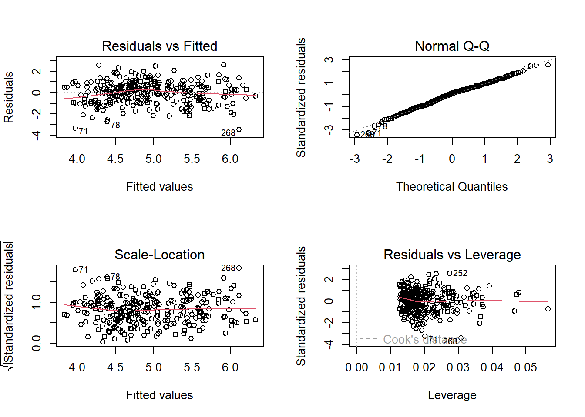
residuals vs fitted - used to check linearity (looking for horizontal line) Scale-location - homogeneity of variance (looking for horizontal line, even spread) Normal Q-Q - used to check normality assumption (should follow a straight line) Residuals vs leverage - used to look for outlers,we have a couple more than 3 sd
#Cook’s d
par(mfrow = c(1,1))
plot(ols_results,4)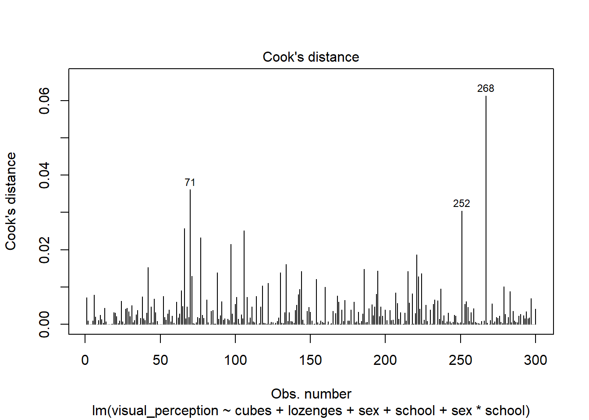
to see the top three observations with highest Cook’s d
dplyr::top_n(ols_results_diag, 3, wt = .cooksd)# A tibble: 3 × 12
.rownames visual_perception cubes lozenges sex school .fitted .resid .hat
<chr> <dbl> <dbl> <dbl> <fct> <fct> <dbl> <dbl> <dbl>
1 71 0.667 4.5 0.75 Female Paste… 3.98 -3.31 0.0201
2 252 8.5 6.5 4.25 Male Grant… 5.91 2.59 0.0274
3 268 2.67 8.5 4 Male Grant… 6.12 -3.45 0.0308
# … with 3 more variables: .sigma <dbl>, .cooksd <dbl>, .std.resid <dbl>Residual vs leverage
plot(ols_results,5)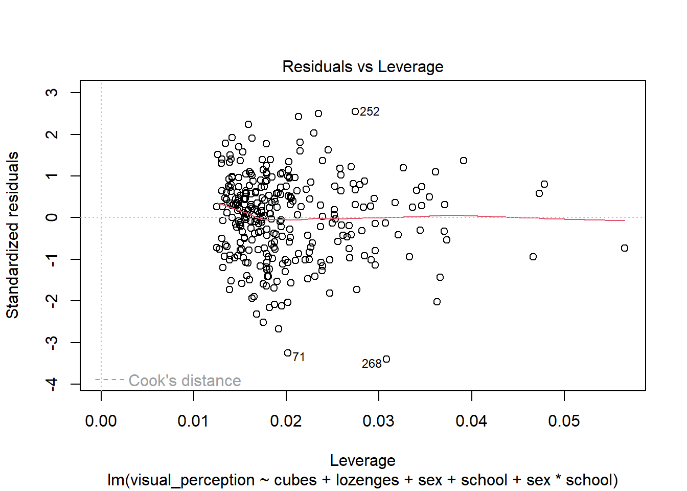
store predicted values
hs1939$ols_pred <- predict.lm(ols_results)create a formatted regression table to Word
apaTables::apa.reg.table(ols_results, filename = "ols regression.doc", prop.var.conf.level = 0.95)
Regression results using visual_perception as the criterion
Predictor b b_95%_CI sr2 sr2_95%_CI Fit
(Intercept) 3.15** [2.48, 3.81]
cubes 0.15** [0.05, 0.26] .02 [-.01, .05]
lozenges 0.42** [0.31, 0.54] .14 [.07, .21]
sexMale -0.04 [-0.38, 0.30] .00 [-.00, .00]
schoolPasteur -0.18 [-0.52, 0.15] .00 [-.01, .01]
sexMale:schoolPasteur -0.00 [-0.47, 0.47] .00 [-.00, .00]
R2 = .229**
95% CI[.14,.30]
Note. A significant b-weight indicates the semi-partial correlation is also significant.
b represents unstandardized regression weights.
sr2 represents the semi-partial correlation squared.
Square brackets are used to enclose the lower and upper limits of a confidence interval.
* indicates p < .05. ** indicates p < .01.
additional assessments
library(performance)
library(see)R-squared
r2(ols_results)# R2 for Linear Regression
R2: 0.229
adj. R2: 0.216get AIC
AIC(ols_results)[1] 877.1459check model
check_model(ols_results)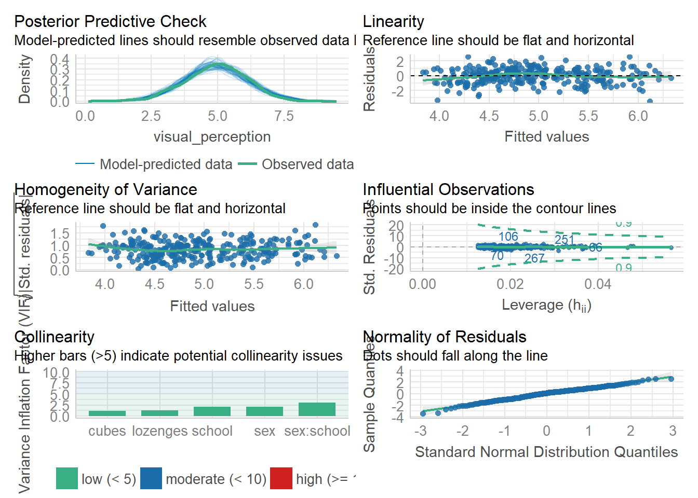
model performance
model_performance(ols_results)# Indices of model performance
AIC | BIC | R2 | R2 (adj.) | RMSE | Sigma
-----------------------------------------------------
877.146 | 903.072 | 0.229 | 0.216 | 1.020 | 1.030check heterogeniety
check_heteroscedasticity(ols_results)OK: Error variance appears to be homoscedastic (p = 0.703).or use Studentized Breusch-Pagan test
bptest(ols_results)
studentized Breusch-Pagan test
data: ols_results
BP = 8.3277, df = 5, p-value = 0.1391ncvTest(ols_results)Non-constant Variance Score Test
Variance formula: ~ fitted.values
Chisquare = 0.1451274, Df = 1, p = 0.70324check normality
check_normality(ols_results)Warning: Non-normality of residuals detected (p = 0.046).check multicollinearity
check_collinearity(ols_results)# Check for Multicollinearity
Low Correlation
Term VIF Increased SE Tolerance
cubes 1.17 1.08 0.85
lozenges 1.25 1.12 0.80
sex 2.09 1.44 0.48
school 2.05 1.43 0.49
sex:school 3.01 1.73 0.33#can also use VIF
vif(ols_results)there are higher-order terms (interactions) in this model
consider setting terms = 'marginal' or 'high-order'; see ?vif cubes lozenges sex school sex:school
1.174045 1.247977 2.085638 2.048237 3.005930 beta weights, structure coefficients, and commonality analysis
regr(ols_results)$LM_Output
Call:
lm(formula = visual_perception ~ cubes + lozenges + sex + school +
sex * school, data = hs1939)
Residuals:
Min 1Q Median 3Q Max
-3.4489 -0.7332 0.1242 0.6563 2.5863
Coefficients:
Estimate Std. Error t value Pr(>|t|)
(Intercept) 3.146754 0.339422 9.271 < 0.0000000000000002 ***
cubes 0.154051 0.054852 2.808 0.00531 **
lozenges 0.424857 0.058895 7.214 0.00000000000464 ***
sexMale -0.040015 0.171854 -0.233 0.81605
schoolPasteur -0.181467 0.170340 -1.065 0.28760
sexMale:schoolPasteur -0.003748 0.239219 -0.016 0.98751
---
Signif. codes: 0 '***' 0.001 '**' 0.01 '*' 0.05 '.' 0.1 ' ' 1
Residual standard error: 1.03 on 294 degrees of freedom
Multiple R-squared: 0.2288, Adjusted R-squared: 0.2157
F-statistic: 17.44 on 5 and 294 DF, p-value: 0.000000000000003987
$Beta_Weights
cubes lozenges sexMale
0.155856263 0.412739477 -0.017222356
schoolPasteur sexMale:schoolPasteur
-0.078087598 -0.001391098
$Structure_Coefficients
cubes lozenges sex school sex:school
[1,] 0.6265493 0.9291137 0.1572524 -0.00117993 0.136899
$Commonality_Data
$Commonality_Data$CC
Coefficient % Total
Unique to cubes 0.0207 9.04
Unique to lozenges 0.1365 59.66
Unique to sex 0.0000 0.00
Unique to school 0.0000 0.00
Unique to sex:school 0.0000 0.00
Common to cubes, and lozenges 0.0647 28.26
Common to cubes, and sex 0.0000 0.00
Common to lozenges, and sex 0.0000 0.00
Common to cubes, and school 0.0000 0.00
Common to lozenges, and school 0.0000 0.00
Common to sex, and school 0.0000 0.00
Common to cubes, and sex:school 0.0001 0.04
Common to lozenges, and sex:school 0.0001 0.04
Common to sex, and sex:school 0.0003 0.14
Common to school, and sex:school 0.0057 2.50
Common to cubes, lozenges, and sex 0.0000 0.00
Common to cubes, lozenges, and school 0.0000 0.00
Common to cubes, sex, and school 0.0000 0.00
Common to lozenges, sex, and school 0.0000 0.00
Common to cubes, lozenges, and sex:school 0.0011 0.48
Common to cubes, sex, and sex:school -0.0002 -0.09
Common to lozenges, sex, and sex:school 0.0014 0.61
Common to cubes, school, and sex:school 0.0048 2.08
Common to lozenges, school, and sex:school -0.0050 -2.19
Common to sex, school, and sex:school -0.0001 -0.05
Common to cubes, lozenges, sex, and school 0.0000 0.00
Common to cubes, lozenges, sex, and sex:school 0.0042 1.82
Common to cubes, lozenges, school, and sex:school -0.0055 -2.39
Common to cubes, sex, school, and sex:school 0.0000 0.01
Common to lozenges, sex, school, and sex:school 0.0001 0.05
Common to cubes, lozenges, sex, school, and sex:school 0.0000 0.00
Total 0.2288 100.00
$Commonality_Data$CCTotalbyVar
Unique Common Total
cubes 0.0207 0.0691 0.0898
lozenges 0.1365 0.0610 0.1975
sex 0.0000 0.0057 0.0057
school 0.0000 0.0000 0.0000
sex:school 0.0000 0.0069 0.0069
$Effect_Size
Effect.Size Recommended
Wherry1 0.213004137562632 No
Claudy3 0.216826897309118 Yes
Smith 0.21305785375009 No
Wherry2 0.21568099423759 No
Olkin & Pratt 0.21418104223246 No
Pratt 0.214134802844001 No
$Comment
[1] "The Effect Size recommendations are based on Yin and Fan (2001). Your dataset may take on a different covariance structure, thus making another effect size estimate more appropriate."dominance analysis
All-possible-subsets regression
apsOut<- aps(hs1939, "visual_perception",list("cubes", "lozenges","sex","school"))Dominance weights
dominance(apsOut)$DA
k R2 cubes.Inc lozenges.Inc
cubes 1 0.0898173436269 NA 0.1330774
lozenges 1 0.1975092709142 0.02538548 NA
sex 1 0.0056577540518 0.08584472 0.1918707
school 1 0.0000003185388 0.09049613 0.2078954
cubes,lozenges 2 0.2228947539212 NA NA
cubes,sex 2 0.0915024769216 NA 0.1315827
lozenges,sex 2 0.1975284144058 0.02555675 NA
cubes,school 2 0.0904964520242 NA 0.1379864
lozenges,school 2 0.2078957299479 0.02058714 NA
sex,school 2 0.0056585189401 0.08654263 0.2023507
cubes,lozenges,sex 3 0.2230851643607 NA NA
cubes,lozenges,school 3 0.2284828660089 NA NA
cubes,sex,school 3 0.0922011525146 NA 0.1365949
lozenges,sex,school 3 0.2080092392236 0.02078681 NA
cubes,lozenges,sex,school 4 0.2287960528967 NA NA
sex.Inc school.Inc
cubes 0.00168513329 0.0006791083973
lozenges 0.00001914349 0.0103864590337
sex NA 0.0000007648883
school 0.00565820040 NA
cubes,lozenges 0.00019041044 0.0055881120877
cubes,sex NA 0.0006986755931
lozenges,sex NA 0.0104808248178
cubes,school 0.00170470049 NA
lozenges,school 0.00011350928 NA
sex,school NA NA
cubes,lozenges,sex NA 0.0057108885360
cubes,lozenges,school 0.00031318689 NA
cubes,sex,school NA NA
lozenges,sex,school NA NA
cubes,lozenges,sex,school NA NA
$CD
cubes lozenges sex school
CD:0 0.08981734 0.1975093 0.0056577541 0.0000003185388
CD:1 0.06724211 0.1776145 0.0024541591 0.0036887774398
CD:2 0.04422884 0.1573066 0.0006695401 0.0055892041662
CD:3 0.02078681 0.1365949 0.0003131869 0.0057108885360
$GD
cubes lozenges sex school
0.055518778 0.167256318 0.002273660 0.003747297 Binary Outcome (Logit/Probit)
create a binary output
hs1939$visual_binary[hs1939$visual_perception < 5] <- 0
hs1939$visual_binary[hs1939$visual_perception >= 5] <- 1
hs1939$visual_binary <- factor(hs1939$visual_binary, levels = c(0,1), labels = c( "No", "Yes"))
table(hs1939$visual_binary)
No Yes
142 158 check for empty cells with the catagorical variables
ftable(hs1939$visual_binary, hs1939$school, hs1939$sex) Female Male
No Grant-White 33 36
Pasteur 41 32
Yes Grant-White 40 36
Pasteur 40 42Have no empty cells
Logistic model
log_results <- glm(visual_binary ~ lozenges + school,
family = "binomial", data = hs1939)let’s look at the results
summary(log_results)
Call:
glm(formula = visual_binary ~ lozenges + school, family = "binomial",
data = hs1939)
Deviance Residuals:
Min 1Q Median 3Q Max
-1.9483 -0.9921 0.5586 1.0735 1.7272
Coefficients:
Estimate Std. Error z value Pr(>|z|)
(Intercept) -1.4466 0.2984 -4.847 0.000001253063 ***
lozenges 0.7926 0.1273 6.228 0.000000000472 ***
schoolPasteur -0.3844 0.2593 -1.483 0.138
---
Signif. codes: 0 '***' 0.001 '**' 0.01 '*' 0.05 '.' 0.1 ' ' 1
(Dispersion parameter for binomial family taken to be 1)
Null deviance: 415.03 on 299 degrees of freedom
Residual deviance: 368.24 on 297 degrees of freedom
AIC: 374.24
Number of Fisher Scoring iterations: 4coefficients are log-odds
glance(log_results)# A tibble: 1 × 8
null.deviance df.null logLik AIC BIC deviance df.residual nobs
<dbl> <int> <dbl> <dbl> <dbl> <dbl> <int> <int>
1 415. 299 -184. 374. 385. 368. 297 300Obtain pseudo-R-squared
DescTools::PseudoR2(log_results, which = c("McFadden", "McFaddenAdj", "CoxSnell", "Nagelkerke")) McFadden McFaddenAdj CoxSnell Nagelkerke
0.11273958 0.09828296 0.14441464 0.19273595 r2(log_results)# R2 for Logistic Regression
Tjur's R2: 0.148provide detailed adds
log_results_diag <- augment(log_results)
log_results_diag# A tibble: 300 × 10
.rownames visual_binary lozenges school .fitted .resid .std.resid .hat
<chr> <fct> <dbl> <fct> <dbl> <dbl> <dbl> <dbl>
1 1 No 0.375 Pasteur -1.53 -0.625 -0.630 0.0143
2 2 Yes 2.12 Pasteur -0.147 1.24 1.25 0.00802
3 3 No 1.88 Pasteur -0.345 -1.03 -1.04 0.00863
4 4 Yes 3 Pasteur 0.547 0.956 0.960 0.00850
5 6 Yes 2.25 Pasteur -0.0478 1.20 1.20 0.00784
6 7 No 1 Pasteur -1.04 -0.779 -0.783 0.0122
7 8 Yes 1.88 Pasteur -0.345 1.33 1.33 0.00863
8 9 No 1.5 Pasteur -0.642 -0.920 -0.924 0.0100
9 10 No 0.75 Pasteur -1.24 -0.714 -0.719 0.0132
10 11 No 2 Pasteur -0.246 -1.07 -1.08 0.00829
# … with 290 more rows, and 2 more variables: .sigma <dbl>, .cooksd <dbl>compare our model with an empty model 1. Calculate difference in deviance
with(log_results, null.deviance-deviance)[1] 46.79083- Calculate degrees of freedom for the difference
with(log_results, df.null - df.residual)[1] 2- obtian the p-value
with(log_results,pchisq(null.deviance-deviance, df.null - df.residual, lower.tail = FALSE))[1] 0.00000000006910372- Loglikelihood ratio test
logLik(log_results)'log Lik.' -184.1219 (df=3)Quick visual
par(mfrow = c(2,2))
plot(log_results)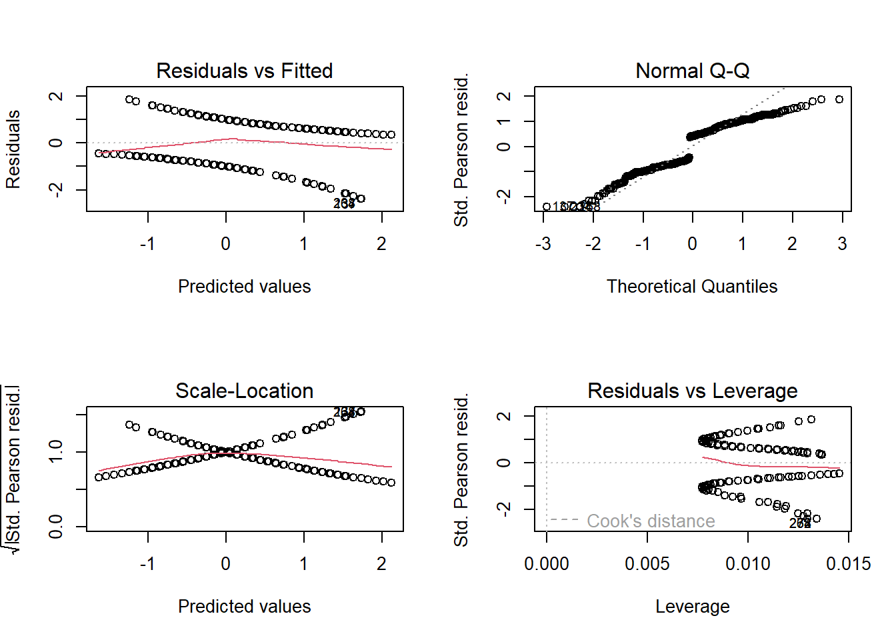
par(mfrow = c(1,1))95% Confidence intervals
confint(log_results)Waiting for profiling to be done... 2.5 % 97.5 %
(Intercept) -2.0460178 -0.8732979
lozenges 0.5512265 1.0514514
schoolPasteur -0.8990369 0.1191850Confidence intervals using standard errors
confint.default(log_results) 2.5 % 97.5 %
(Intercept) -2.0315353 -0.8616444
lozenges 0.5431561 1.0419800
schoolPasteur -0.8925993 0.1237144Odds Ratios
exp(coef(log_results)) (Intercept) lozenges schoolPasteur
0.2353716 2.2090622 0.6808301 Odds Ratios and 95% CI
exp(cbind(OR = coef(log_results), confint(log_results)))Waiting for profiling to be done... OR 2.5 % 97.5 %
(Intercept) 0.2353716 0.1292486 0.4175722
lozenges 2.2090622 1.7353802 2.8618019
schoolPasteur 0.6808301 0.4069614 1.1265784predicted probabilities
- create data frame
newlogdata <- with(hs1939, data.frame(lozenges= rep(seq(from = 1, to = 6, length.out = 100), 2),
school = factor(rep(c("Grant-White","Pasteur"), each =100))))
glimpse(newlogdata)Rows: 200
Columns: 2
$ lozenges <dbl> 1.000000, 1.050505, 1.101010, 1.151515, 1.202020, 1.252525, 1…
$ school <fct> Grant-White, Grant-White, Grant-White, Grant-White, Grant-Whi…newlogdata <- cbind(newlogdata, predict(log_results, newdata = newlogdata, type = "link",
se = TRUE))calculate the predicted probabilities and upper/lower bounds
newlogdata <- within(newlogdata, {
PredictPROB <- plogis(fit)
LL <- plogis(fit - (1.96 * se.fit))
UL <- plogis(fit + (1.96 * se.fit))
})
head(newlogdata) lozenges school fit se.fit residual.scale UL LL
1 1.000000 Grant-White -0.6540218 0.2105564 1 0.4399583 0.2560288
2 1.050505 Grant-White -0.6139931 0.2072046 1 0.4482183 0.2650052
3 1.101010 Grant-White -0.5739644 0.2040002 1 0.4565786 0.2741228
4 1.151515 Grant-White -0.5339357 0.2009503 1 0.4650389 0.2833716
5 1.202020 Grant-White -0.4939070 0.1980621 1 0.4735983 0.2927410
6 1.252525 Grant-White -0.4538783 0.1953427 1 0.4822558 0.3022197
PredictPROB
1 0.3420838
2 0.3511489
3 0.3603226
4 0.3695994
5 0.3789736
6 0.3884391Create a visual
library(ggplot2)
ggplot(newlogdata, aes(x = lozenges, y = PredictPROB))+geom_ribbon(aes(
ymin = LL, ymax = UL, fill = school), alpha = .2) + geom_line(
aes(colour = school), size = 1)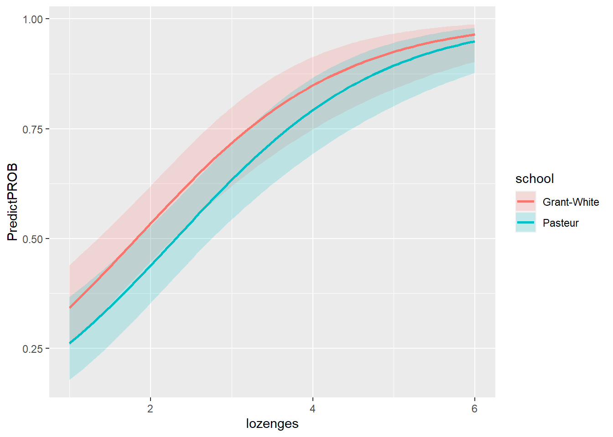
References:
- http://www.sthda.com/english/wiki/one-way-anova-test-in-r
- http://www.sthda.com/english/wiki/two-way-anova-test-in-r
- https://www.datanovia.com/en/lessons/t-test-in-r/#effect-size-1
Logit resource:
-https://stats.idre.ucla.edu/r/dae/logit-regression/